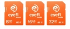

Eyefi Mobi卡是内置Wi-Fi功能的SDHC卡。将数码相机拍摄美图靓照动画视频瞬间传送到智能手机和平板电脑。没有Wi-Fi网络也没有关系。将Eyefi Mobi卡插入数码相机进行拍摄，卡片会自动生成Wi-Fi网络，将图片或动画传送到移动终端。通过Eyefi的专利技术，拍摄后文件会被自动发送出去。
5分 终于找到一款连接成功率高 传输速度快的wifi卡了
连接成功率高 传输速度快 配合CF卡套5D2变的高大上
无
好用！装在自拍神器上能用
适配很简单 传输速度很快 每次连接都能连上
不大喜欢橘色的外形
很值得入手的一款wifi内存卡
使用简单，我老婆都会用 传输速度还不错，适配的机型很多
暂无发现